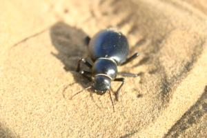

Le 7 décembre 2004,
Finalement, nous sommes 4 touristes a participer a ce safari. Deux anglaises nous rejoignent au moment de partir. Nous embarquons dans une jeep pour rejoindre nos chameaux et chameliers a la porte du desert. Allez maintenant, il faut se lancer et monter sur ce gros machin a pattes qui n’arrete pas de bramer ! Une fois assise sur ma monture, arrive le moment tant attendu ou j’ai interet a m’accrocher lorsque le chameau se remet sur ses pattes. Ca tangue !! Je comprends mieux pourquoi on nous a prevenus contre le mal de mer !
Nous voila partis au pas, moi en tete (mon chameau se trouve etre le leader de la troupe), Michael derriere moi chevauchant un Johnny terriblement geignard et Claire et Catherine (les anglaises) fermant la marche. Les 3 chameliers qui nous accompagnent guident les chameaux tout en marchant a cote d’eux. Quels beaux paysages nous traversons ! Ce n’est pas le desert aride du Sahara auquel nous pensions, mais plutot des dunes de terre melange a du sable avec deci-dela des arbustes et des feuillages. Nous passons a travers des troupeaux de moutons, de vaches a bosse, de dromadaires... Rapidement, nous nous eloignons de tout : plus de bruit de voiture, plus de touriste en vue, plus de marchand nous demandant d’entrer dans leur echoppe a chacun de nos passages (ils ne se lassent jamais ?)... Nous n’avons plus devant nous qu’une immensite de paysages nus et calmes. Quel repos pour l’esprit ! Je me laisse entrainer au rythme des balancements de mon chameau parfois la tete vide, parfois l’esprit bouillonant de souvenirs ou de questions sur l’avenir... Les heures passent sans que je ne m’en apercoive vraiment.
Nous nous arretons pour dejeuner quelque part au milieu de rien. Les chameliers allument un feu et nous preparent de la delicieuse cuisine avec de simples ingredients. Ils sont tres forts ! Nous faisons plus ample connaissance avec les 2 anglaises qui s’averent etre vraiment tres gentilles. Elles ont entrepris egalement un tour du monde a deux mais elles sont partis dans l’autre sens et l’Inde est leur dernier pays. Elles rentrent chez elles dans 10 jours apres 11 mois de voyage... Notre propre retour nous parait tellement loin et proche a la fois. C’est une sensation entrange !
Nous repartons sur notre chameau jusqu’a atteindre de veritables dunes de sable fin ou nous nous arretons pour la nuit. Un de nos chameliers s’etant mis dans la tete qu’il nous fallait des bieres pour le soir, part seul avec "mon" chameau pour essayer de trouver des gitans qui pourraient les lui donner. Il ne reviendra que plusieurs heures plus tard, bien apres le coucher du soleil avec ses bieres !
 En attendant, Michael et moi nous eclipsons un moment pour profiter a deux de ce moment inoubliable de quietude. Nous nous sentons tellement minuscules dans ce desert ! Des petits scarabes intrigues nous tournent autour pendant un moment, puis disparaissent aussi soudainement qu’ils sont venus. La nuit commence a tomber et un superbe coucher de soleil s’offre a nous. C’est magnifique ! J’ai rarement vu un aussi beau spectacle... Les couleurs rouges orangees du ciel se melent au bleu virant sur le sombre. Bientot apparait la premiere etoile, puis la deuxieme... Rapidement, le ciel se rempli d’une multitude de petites planetes scintillantes. Je reste allongee pres du feu a admirer la voie lactee pendant que les autres discutent de choses et d’autres. Mon champ de vision du ciel est completement dedage et je me retrouve devant une immense demi-sphere ou sont accrochees ces petites billes lumineuses. Je n’ai jamais vu autant d’etoiles de toute ma vie, c’est fabuleux... J’apercois meme quelques etoiles filantes, mais le temps de faire un voeu, elles ont deja disparu.
Finalement, devant ce spectacle magnifique, nous decidons de ne pas monter la tente comme c’etait prevu et de dormir a la belle etoile (c’est vraiment le cas de le dire !). Calfeutres dans notre sac de couchage, sous 3 couvertures, nous admirons la lune se lever. Pas tres longtemps pour Michael que j’entends ronfler au bout de 5 minutes ! A mon tour a present de sombrer dans les bras de Morphee...
Eve-Laure
{kind=link}
{kind=link}